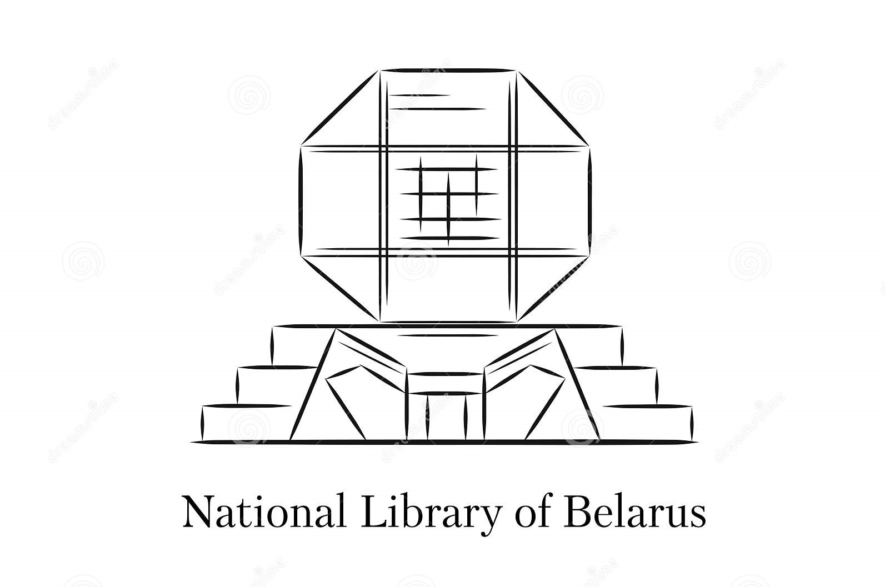

БИБЛИОТЕКА
Национальная библиотека – визитная карточка Беларуси. Сегодня это не только богатейшее собрание книг, но и огромный мультифункциональный центр,
где совместились высокие технологии, ультрасовременный дизайн и необычная архитектура. Главная библиотека страны была основана в 1922 году при
Белорусском государственном университете и получила название Белорусской государственной и университетской библиотеки. Первоначально ее фонды
насчитывали 60 тыс. экземпляров. В 1926 году Белорусская государственная библиотека стала самостоятельным учреждением. Тогда же принято решение
о строительстве для нее нового здания. Почетными гостями Национальной библиотеки были президенты, руководители правительств и парламентов стран
мира, руководители международных организаций, известные ученые, писатели, художники.
